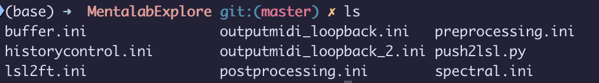
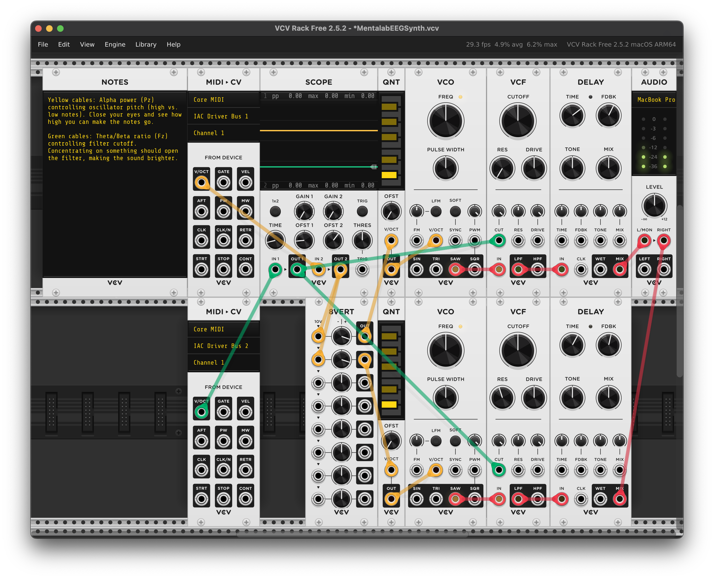

EEGSynth
EEGSynth is a software project aiming at connecting brain signals to electronic music instruments. EEGSynth is taking inspiration from modular synthesizers. In a modular synth, each module performs a specific function, such as generating sound, modulating sound, generating control voltages, etc., and outputs from one module can be connected to the inputs of another module using patch cables. The entirety of the connected modules is referred to as a patch.
Similarly, EEGSynth modules can, among many other things, take in real-time EEG signals, process them and extract useful information such as bandpower, and use these to send instruction messages to electronic music instruments using the MIDI standard.
In this application example, we show how to set up Mentalab Explore for EEGSynth and create a patch that uses EEG bandpower to control a patch in VCV Rack, a virtual modular synthesizer coming with a fully functional free version.
Setting up required software
Follow the official guidelines on how to install eegsynth, making sure to also follow the platform-specific instructions for your operating system.
In addition to several python packages, you will also need to have redis server installed on your machine.
Setting up EEGSynth
Running redis server
Redis is used by EEGSynth to communicate information between individual modules of your EEGSynth patch. One the command line, use the first command to start the server. Using the second command, you can monitor the messages that are communicated over redis.
redis-server
redis-cli monitorPush ExG data to LSL
We have set up an 8-channel Explore Pro device with channel 1 on Oz, suitable for recording alpha waves, and channel 2 on Fz, suitable for recording frontal theta and beta activity.
Next, we will use lab streaming layer to make the stream of EEG data available for further processing in EEGSynth.
You can either use the LSL button in Explore Desktop, or use the following lines of python code to push to lsl using explorepy.
import explorepy
expdev = explorepy.Explore()
expdev.connect("Explore_XXXX") # REPLACE STRING WITH YOUR DEVICE NAME
expdev.push2lsl()Setting up MIDI loopback
In our example, we are going to use MIDI loopback, meaning that eegsynth will send out MIDI commands and another software, VCV Rack, running on the same computer uses these messages as input.
On MacOS, start the Audio MIDI Setup application, which is installed by default on your system. In the top menu, click Window > Show MIDI Studio.
Double click the IAC Driver module and check the “Device is online” box. Add a bus to the ports section using the + icon if needed.
You should now have a MIDI loopback device that can receive input from an EEGSynth outputmidi module and send the midi messages to a VCV Rack MIDI>CV module.
Start your EEGSynth patch
The general workflow is to run a module from the src/modules folder and provide it with an .ini file that contains your own configuration parameters.
Generally, you should only need to edit the .ini files but not the modules themselves.
Below is one example that assumes a buffer.ini file has been placed in the new mypatches/MentalabExplore directory.
Each module directory contains an example .ini file that you can copy to your own patch directory and edit there.
|
mkdir mypatches
mkdir mypatches/MentalabExplore
cp src/module/buffer/buffer.ini mypatches/MentalabExploreYou can either run each module individually using the following syntax:
python src/module/buffer/buffer.py -i mypatches/MentalabExplore/buffer.iniOr, once you are happy with your patch, navigate to your patch directory, type eegsynth *.ini, and use tab to autocomplete to all .ini files. Pressing enter will then start all the corresponding modules.
We have created a patch that takes in EEG data via LSL, extracts alpha power on Oz and theta/beta ratio on Fz, and uses the resulting values to send MIDI messages.
The patch is derived from the LSLbandpower patch available in the EEGSynth repository.
All of our patch files are available from our explorepy repository.

Our EEGSynth patch files.
Setting up VCV Rack
VCV Rack is a virtual modular synthesizer. Download the free version of VCV Rack 2 and install it on your machine.
When starting the software, a default patch should be opened. Next, load up the provided example patch from the file menu.

Our VCV Rack patch, controlling oscillator pitch and filter cutoff using EEG bandpower features.
In the two MIDI>CV modules, select the IAC Driver Bus 1 and IAC Driver Bus 2 as MIDI input devices. In the AUDIO module, select your desired sound output device.
The patch is using note pitch, V/OCT, from MIDI Bus 1, alpha power on Oz, to control the pitch of two sound generators, VCO.
In this patch, we have different oscilators on the left and right audio channel, which get slightly different pitch information leading to cool stereo effects.
The sound is then passed through a low pass filter, VCF, whose cutoff frequency is controlled by theta/beta power on Fz.
Finally the sound is passed through a delay module to add echo effects to the sound.
Enjoy your brain controlled synthesizer
We uploaded a snippet of our EEGsynth patch here.
Almost reminiscent of the legendary Laurie Spiegel.
Check out our blog post written by Stephen Whitmarsh of the EEGSynth team as well.
Happy patching!